ibisOffice Linux 版ベンチマーク
プレスリリース用。ibisOffice 0.8.5・LibreOffice 26.8.2・ONLYOFFICE 10.0.0 を同じ Linux の PC に入れて計測しました（Microsoft Office は Linux 版が無いため比較に入れていません）。小さいほど速く、かっこ内は ibisOffice の何倍かかったかです。値は 3 回の中央値。計測日：2026-11-03。
ファイルを開いて最初の画面が出るまで
ファイルを開かせてから、1 ページ目（pptx は 1 枚目のスライド、xlsx は 1 シート目の最初の画面）が完全に表示されるまでの時間です。
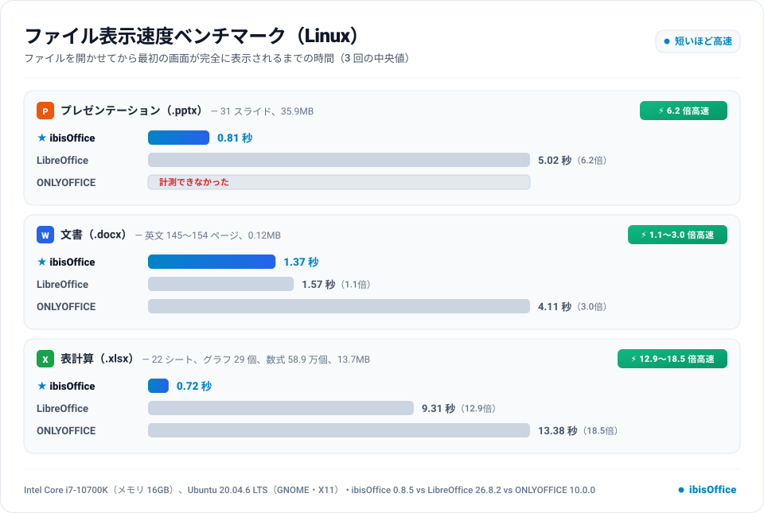
| ファイル | ibisOffice | LibreOffice | ONLYOFFICE |
|---|---|---|---|
| プレゼンテーション（.pptx） | 0.81 秒 3 回：0.82 / 0.80 / 0.81 | 5.02 秒（6.2倍） 3 回：5.08 / 5.01 / 5.02 | 計測できなかった |
| 文書（.docx） | 1.37 秒 3 回：1.37 / 1.33 / 1.39 | 1.57 秒（1.1倍） 3 回：1.53 / 1.57 / 1.59 | 4.11 秒（3.0倍） 3 回：4.16 / 4.11 / 4.00 |
| 表計算（.xlsx） | 0.72 秒 3 回：0.73 / 0.72 / 0.71 | 9.31 秒（12.9倍） 3 回：9.31 / 9.23 / 9.49 | 13.38 秒（18.5倍） 3 回：13.38 / 13.33 / 13.59 |
- どのアプリも、起動して開始画面が出たあとでファイルを開かせた時点から計りました（アプリの起動の時間は入りません）。
- ONLYOFFICE は pptx を正しく開けなかったため、計測できませんでした（3 回とも、スライドを描いた約 0.3 秒後に「文書の処理中にエラーが発生しました。」のダイアログ）。
- LibreOffice は pptx の 1 枚目のスライドの題名などの文字を表示しませんでした（最後の画面でも同じ。終わりのフレームを参照）。描かれた最後の画面を終わりとしています。
- ONLYOFFICE は読み込み中に「スプレッドシートの読み込み中」の箱を出し、その間ほとんど画面が変わらないため、箱が出ている間は録画を止めないようにしました。
100万行の CSV ファイルを開いて最初の画面が出るまで（First View）
ファイルを開かせてから、最初の画面が表示され、閲覧・スクロールが可能になるまでの時間です。
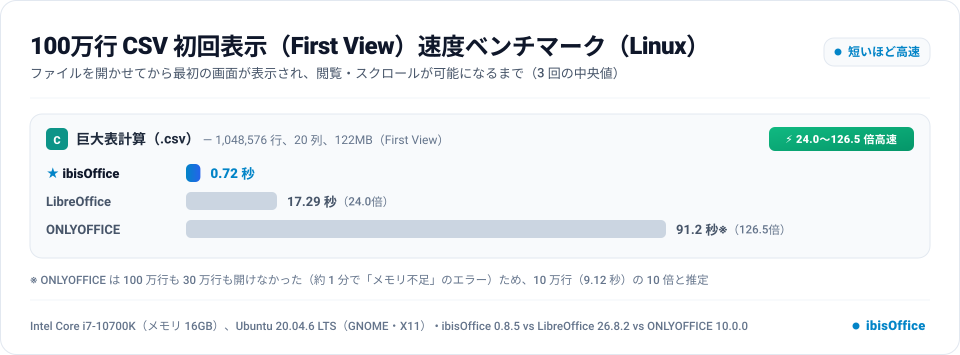
| ファイル | ibisOffice | LibreOffice | ONLYOFFICE |
|---|---|---|---|
| 巨大表計算（.csv） | 0.72 秒 3 回：0.72 / 0.71 / 0.73 | 17.29 秒（24.0倍） 3 回：16.59 / 17.36 / 17.29 | 91.2 秒※（126.5倍） 推定：10 万行の 9.12 秒 × 10 10 万行の 3 回：9.01 / 9.14 / 9.12 |
- ibisOffice は最初の画面を出したあとも裏で読み込みを続け、その間もスクロールできます（20 万行を読んだ時点で 120 行目までスクロールできることを確かめました）。全 1,048,576 行の読み込みが終わるまでは 5.72, 5.44, 5.43 秒でした（行番号の列が少し広がる描き直し）。LibreOffice と ONLYOFFICE は、読み込みが終わるまで表を表示しません。
- ONLYOFFICE は 100 万行の CSV を開けませんでした（3 回とも）。CSV のオプションの OK のあと「スプレッドシートの読み込み中」が続き、66〜67 秒で「おっと！何らかの問題が発生しました。メモリ不足などの理由でファイルにアクセスできなくなりました。」の画面になりました（Mac の 9.4 でも 5 分で開けず）。
- Mac での計測では 30 万行の時間の 3.33 倍を推定値としましたが、Linux の ONLYOFFICE 10.0.0 は 30 万行（300,001 行、34.9MB）の CSV も開けませんでした（3 回とも 58〜66 秒で同じエラー）。
- そこで、10 万行（100,001 行、20 列、11.6MB）の CSV を同じ手順で計測し（3 回の中央値 9.12 秒）、その 10 倍（100 万 ÷ 10 万）の 91.2 秒を推定値としました（グラフの※）。
- LibreOffice はテキストのインポートのダイアログを出す代わりに、同じ設定（カンマ区切り・UTF-8）を
--infilter=CSV:44,34,76,1で渡しました。ONLYOFFICE は「CSV オプションを選択」のダイアログが出たらすぐ Enter で OK を押し、ダイアログが出ていた時間（0.1 秒未満）を除きました。
PDF への変換
コマンドラインで PDF に変換し、コマンドを始めてから PDF を書き終えるまでの時間です。
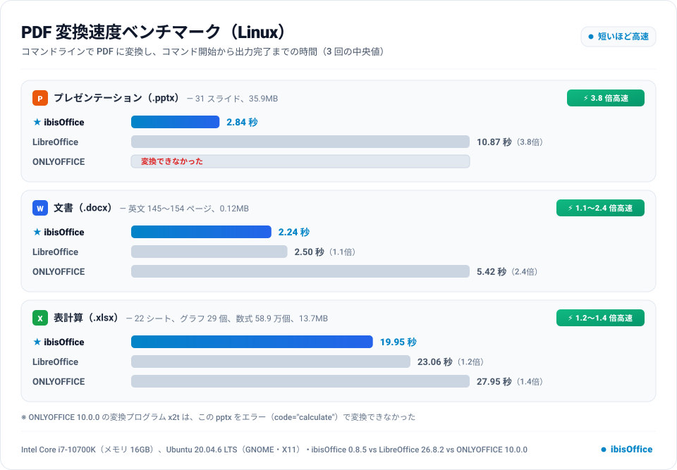
| ファイル | ibisOffice | LibreOffice | ONLYOFFICE |
|---|---|---|---|
| プレゼンテーション（.pptx） | 2.84 秒 3 回：2.87 / 2.82 / 2.84 | 10.87 秒（3.8倍） 3 回：11.00 / 10.87 / 10.78 | 変換できなかった |
| 文書（.docx） | 2.24 秒 3 回：2.55 / 2.23 / 2.24 | 2.50 秒（1.1倍） 3 回：2.51 / 2.50 / 2.43 | 5.42 秒（2.4倍） 3 回：5.42 / 5.40 / 5.44 |
| 表計算（.xlsx） | 19.95 秒 3 回：19.95 / 19.97 / 19.87 | 23.06 秒（1.2倍） 3 回：23.31 / 23.06 / 22.70 | 27.95 秒（1.4倍） 3 回：27.95 / 28.42 / 27.88 |
- 変換に使ったもの：ibisOffice は
ibisOffice-0.8.5-Linux.AppImage --export pdf、LibreOffice はsoffice --headless --convert-to pdf、ONLYOFFICE はアプリに入っている変換プログラムx2t（Mac の計測と同じ）。 - ONLYOFFICE 10.0.0 の x2t は、pptx を変換できませんでした（終了コード 80、
<error code="calculate" />、JavaScript の TypeError）。3 回とも同じです。 - 書き出した PDF のページ数（アプリによって改ページ・印刷範囲の扱いが違うため、ページ数が違います。ONLYOFFICE の xlsx は 15 ページだけ）：
| ファイル | ibisOffice | LibreOffice | ONLYOFFICE |
|---|---|---|---|
| プレゼンテーション（.pptx） | 31 | 31 | — |
| 文書（.docx） | 145 | 154 | 152 |
| 表計算（.xlsx） | 3546 | 4088 | 15 |
計測の条件
- 計測環境：Intel Core i7-10700K（メモリ 16GB）、Ubuntu 20.04.6 LTS（GNOME・X11）、GPU は NVIDIA GeForce RTX 2080 Ti（ドライバー 575.57.08）、ストレージは NVMe SSD。画面は xrdp のリモートデスクトップ（1920×1080）で、X サーバー（xorgxrdp）は GPU を使わずメモリ上に画面を持ちます。
- 描画に GPU を使っているのは ibisOffice だけでした（Vulkan で NVIDIA の GPU を使用。
nvidia-smiで確認）。LibreOffice と ONLYOFFICE は GPU を使わず CPU で描いていました。ibisOffice は GPU で描いた画像を、毎回 GPU からメモリへ読み戻して X サーバーへ渡すため、GPU の上で動く X サーバー（PC に画面をつないだ普通のデスクトップ）より、その分だけ不利です。 - 製品の版：ibisOffice 0.8.5（GitHub の公開版の AppImage、SHA-256 を照合）、LibreOffice 26.8.2.2（The Document Foundation の公式の deb を展開）、ONLYOFFICE Desktop Editors 10.0.0（GitHub の公式リリースの tar.xz）。どれも 2026 年 11 月 3 日時点の最新版で、管理者の権限なしに利用者のフォルダーに入れました。
- 各 3 回計測し、中央値をとりました。どの計測も、そのアプリのプロセスがすべて終了した状態から始め、テスト用のファイルは毎回新しい写しを開きました。
- 使ったファイルは
test/benchmark/の公開用のもの（架空のデータと、メタ情報を取り除いた公開の資料）で、Mac での計測（README）と同じです。
画面の計測のしかた
- アプリの窓を 1 秒に最大 100 回取り込み（
scripts/benchmark-linux/xbench.c、X11 の XShm）、Mac での計測（scripts/benchmark-analyze.py）と同じく、窓を 192×120 の灰色の格子に縮めて前の画面と比べ、格子の 0.2% より多くが 24 階調より大きく変わったときを「変化」としました（点滅するカーソルは数えません）。文書の部分だけを見て（ツールバー・ステータス バーは除く。pptx はスライドの中央）、最後の変化（＝最後の画面の最初のフレーム）を終わりとし、終わりのフレームは目で確かめました（下の「終わりのフレーム」）。 - どのアプリも、ファイルなしで起動して開始画面が出るのを待ってから、ファイルを開かせました。LibreOffice と ONLYOFFICE は、コマンドラインで起動中のアプリにファイルを渡しました（Mac の計測と同じ）。ibisOffice は Linux ではコマンドラインで渡したファイルを新しいプロセスで開く（起動の時間が入る）ため、開始画面の「最近開いたファイル」の一番上にそのファイルを置いて起動し、その項目をクリックした時点から計りました（クリックは X11 の XTest で送る）。
- 窓の大きさは揃えました：ibisOffice は既定の 1280×800、LibreOffice は 1280×800 に設定、ONLYOFFICE は影を除いて約 1280×800 に設定。
- CSV の First View：最初の画面から読み込み完了までに描き直しがある ibisOffice のために、「文書の部分が最後の画面とほぼ同じ（格子の 8 割以上が同じ）になった最初のフレーム」を終わりとしました。LibreOffice と ONLYOFFICE は読み込みが終わるまで表を出さないので、最後の変化と同じです。
この PC に固有の事情
- LibreOffice 26.8 の公式のバイナリは glibc 2.34 以上が要り、Ubuntu 20.04 の glibc 2.31 では起動しません。そこで、Ubuntu 22.04 の公式のパッケージの glibc 2.35 と libstdc++（GCC 12）を利用者のフォルダーに展開し、そのローダーで
soffice.binを直接起動しました（システムには手を入れていません）。新しい glibc で動かすことによる速さの差は小さいと考えますが、通常の入れ方ではない点に注意してください。 - LibreOffice は、毎回プロセスを終了させると次の起動で「ドキュメントの回復」を出すため、自動回復と自動保存を切りました。初回起動のダイアログ（Welcome、今日のヒント、寄付の案内）も切りました。
- この PC はほかの利用者もログインしている共用の PC です（計測中の負荷の平均は各結果の JSON の
load_beforeに記録）。
終わりのフレーム
中央値の回の、終わりと判定したフレームと、その直前のフレーム（窓の部分、半分の大きさ）。
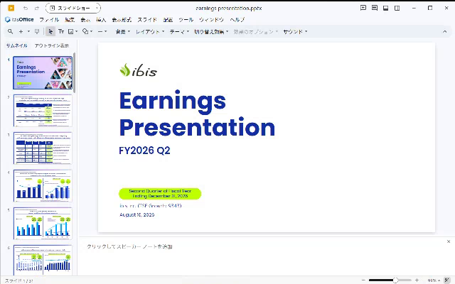
直前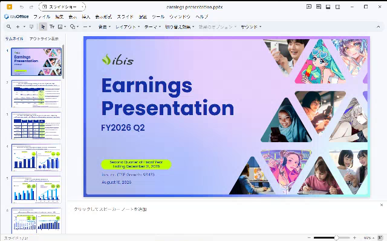
終わり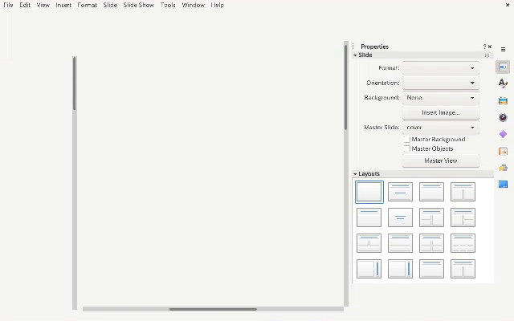
直前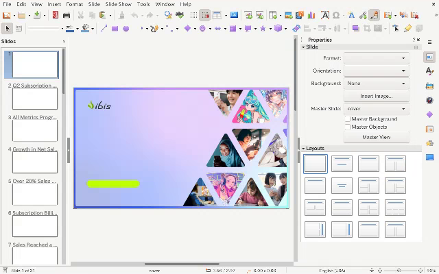
終わり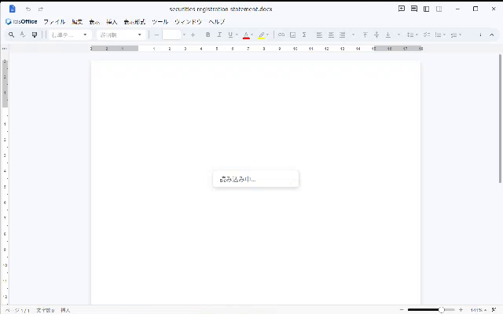
直前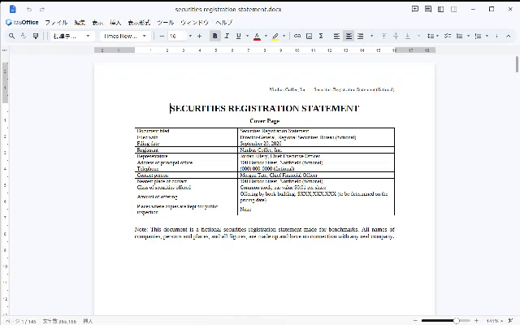
終わり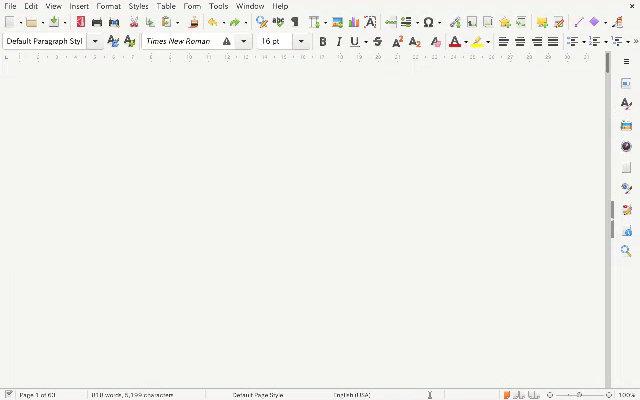
直前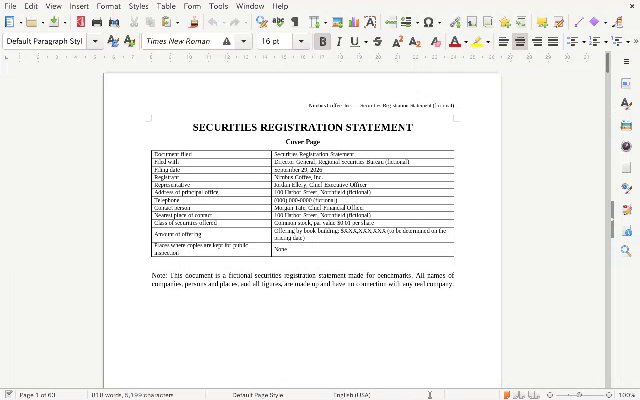
終わり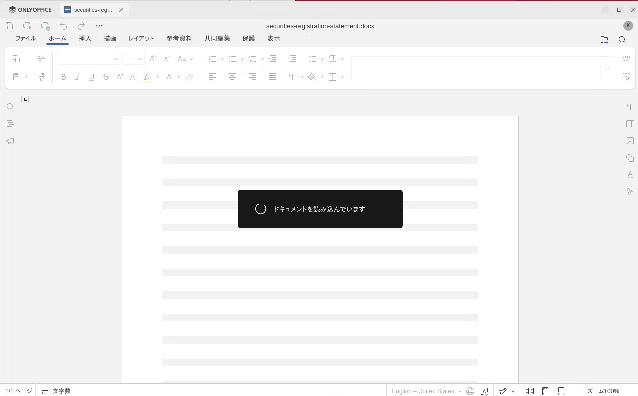
直前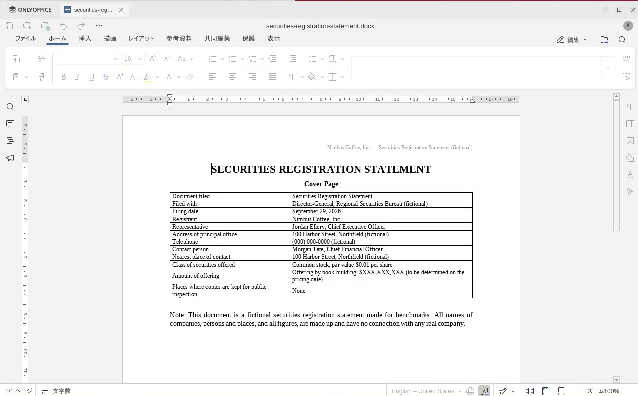
終わり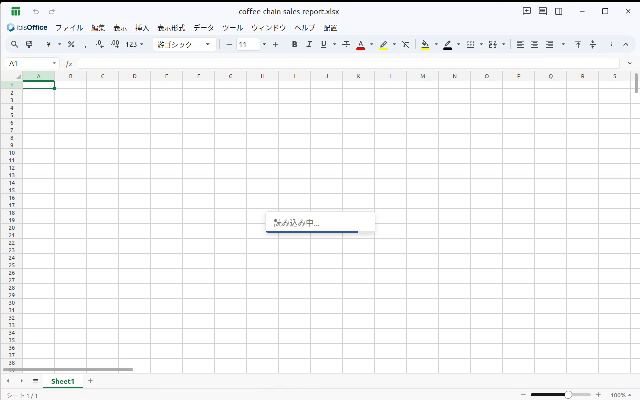
直前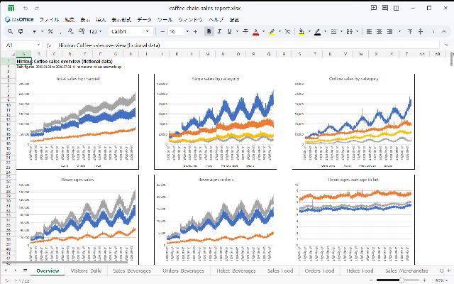
終わり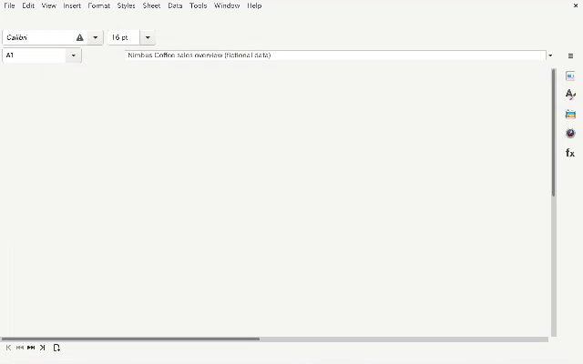
直前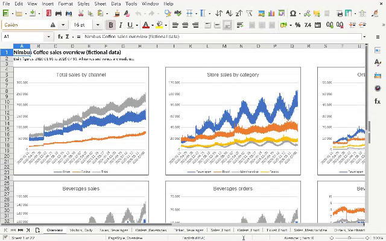
終わり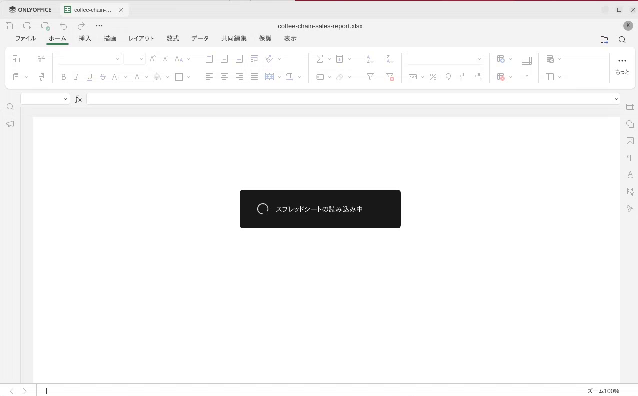
直前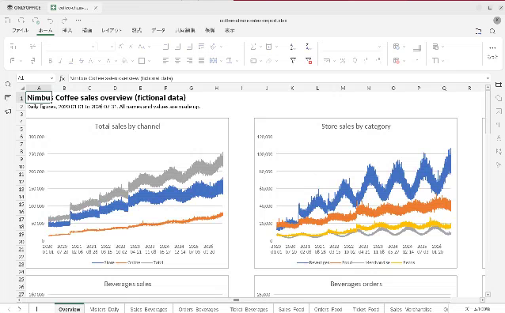
終わり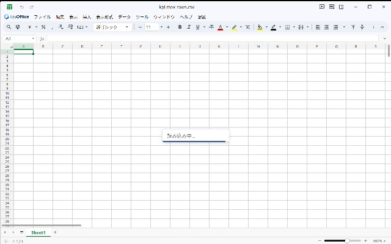
直前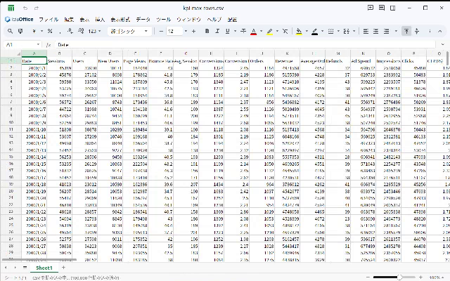
終わり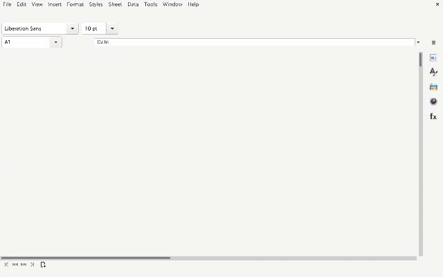
直前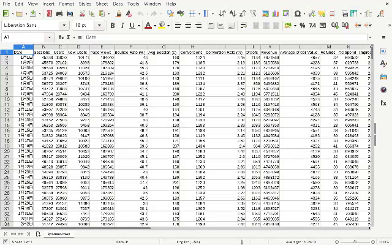
終わり記録
- 結果：
test/benchmark/linux-2026-11/runs/*.json（1 回ずつ）、results.json（まとめ）、グラフ：benchmark-{open,csv,pdf}-ja.svg。 - 計測のスクリプト：
scripts/benchmark-linux/（bench.py・xbench.c・report.py）。手順はtest/benchmark/linux-2026-11/README.md。